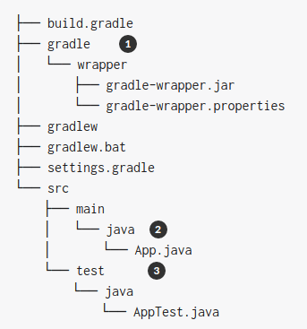

План
- Системы сборки приложений. Maven. Gradle.
- VCS (Version Control System/Система контроля версий)
- CI (Continuous Integration/Система непрерывной интеграции) Jenkins
- Автоматизация развертывания приложений Docker
Системы сборки
Нет системы сборки
class HelloWorld {
public static void main(String[] args) {
System.out.println("Hello World!");
}
}
$ javac HelloWorld.java
$ java HelloWorld
Больше кода
class HelloWorld {
public static void main(String[] args) {
Printer.print("Hello World!");
}
}
class Printer {
public static void print(String text) {
System.out.println(text);
}
}
$ javac Printer.java HelloWorld.java
$ java HelloWorld
Система сборки. Требования
- Сборка вне IDE
- Запуск тестов
- Особая структура файлов
- Зависимости
Системы сборки для Java
- Maven
- Gradle
- Ant
Maven
Одна из самых популярных систем сборки
https://maven.apache.org
- описание проекта в файле pom.xml
- сделан для сборки в Java
- различные выходные форматы: jar, war, ear...
- много plugin-ов
Maven артефакт
- groupId ru.naumen
- artifactId sdng
- version 4.11.0
Структура pom.xml
ru.urfu.matmex
simple
jar
1.0
Simple Project
...
Зависимости
junit
junit
4.12
test
...
Объявление переменных
1.8.3
...
Зависимость
1.8.3
commons-beanutils
beanutils
${beanutils.version}
commons-logging
commons-logging
Транзитивные зависимости
Gradle
Еще одна популярная система сборки
- Описание проекта на языке Groovy или Kotlin (DSL)
- Стандартный способ конфигурации сборки при разработке на Android
Структура проекта
Описание проекта
apply plugin:'java'
apply plugin:'checkstyle'
apply plugin:'findbugs'
apply plugin:'pmd'
version = '1.0'
repositories {
mavenCentral()
}
dependencies {
testCompile group:'junit', name:'junit', version:'4.11'
}
VCS
Version Control System
GIT
Два типа VCS
- Централизованные VCS: CVS, Subversion(SVN)
- Распределенные VSC: Git, Mercurial(Hg), BitKeeper, Bazaar
Централизованные VCS
Достоинства
- Всё хранится на сервере
- Централизованная блокировка изменений
Недостатки
- Невозможно работать без доступа к серверу
- Один сервер - уникальная точка отказа
Распределенные VCS
Достоинства
- Практически невозможно потерять репозиторий
- Работа с версиями не зависит от доступности сервера
Недостатки
- Невозможны централизованные блокировки файлов
Git: появление
- Linux
- BitKeeper
- Линус Торвальдс и сообщество
Подробнее тут: https://git-scm.com/book/ru/v2

Система непрерывной интеграции
Jenkins
Система непрерывной интеграции
- Рутина
- Плохой код в репозитории
- Проблемы окружения
- История сборок
- Много-много тестов
Рутина
mvn clean install
cp target/artifact.war ../tomcat/webapps
../tomcat/bin/startup.sh
mvn test
...
git checkout develop
git merge ${branchName}
git push origin develop
Плохой код
| "Плохой" разработчик | "Хороший" разработчик |
|
|
Проблемы окружения
| Твой компьютер | Не твой компьютер |
 |
История сборок
 |
 |
Много тестов
over 13000 тестов, 32+ дочерних узла

CI Jenkins
- Быстро находит ошибки
- Тестирует весь код
- Обеспечивает наличие стабильной версии кода
- Повышает качество
Jenkins. Общий вид

Наш цикл интеграции
- Триггер (расписание, git)
- Сборка
- Статический анализ
- Unit тестирование
- DB-тестирование
- Interface-тесты (Selenium)
- Сохранение
- Отчет
Развертывание
- Запуск на железе
- Запуск на виртуальной машине
- Запуск в контейнере
Запуск на железе
Плюсы
- Простота
- Доступность
Минусы
- Что если сгорит?
- Что если не хватит мощности?
Запуск в VM
Полная эмуляция железа
Плюсы
- Надежность
- Переносимость
Минусы
- Накладные расходы
Запуск в контейнере (Docker)
Псевдо эмуляция железа - изоляция приложений
Плюсы
- Надежность
- Переносимость
Минусы
- Меньшие, но все же накладные расходы